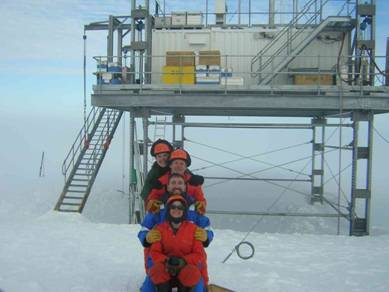

This file contains background
information about the
|
Gas |
OD/GH |
Man-made and natural sources |
Sinks |
Comments |
|
CO2 |
GHG |
Fossil
fuel combustion, biomass burning, deforestation, oceans, terrestrial
biosphere, volcanism, CH4 and CO oxidation |
Uptake by
oceans and biosphere |
Principal
anthropogenic GHG, partitioning uncertain and variable |
|
CH4 |
GHG *1 |
Ruminant
animals, rice paddies, gas and mining leaks, landfill, biomass burning,
anaerobic decomposition |
Tropospheric oxidation, stratospheric Cl |
Major
anthropogenic GHG |
|
N2O |
GHG ODS |
Land
cultivation, fertiliser use, oceans, soils,
aquifers |
Stratospheric
oxidation/O1D |
Major
anthropogenic GHG: ‘missing’ global source(s) |
|
CO |
*1 |
Fossil
fuel burning, biomass burning, CH4 and hydrocarbon oxidation,
oceans |
Tropospheric oxidation |
Global
budget not closed, O3 precursor |
|
|
GHG |
Fossil
fuel and biomass burning, soils, oceans, oxidation of CS2 (from
wetlands, artificial fibre industry, etc.) |
Tropospheric and stratospheric oxidation |
Forms
aerosols in stratosphere |
|
CFCs |
ODS GHG |
Refrigeration
and air conditioning, foam blowing, aerosol propellants, electronics industry |
Stratospheric
photolysis |
Direct
and indirect effects on radiative balance (changes
in stratospheric ozone) |
|
HCFCs |
ODS GHG |
Similar to
the CFCs which they replace |
Stratospheric
oxidation, photolysis, tropospheric oxidation |
|
|
HFCs |
GHG |
Similar
to CFCs, also chemical industry |
Stratospheric,
tropospheric oxidation |
|
|
Halons |
ODS |
Fire
extinguishers |
Stratospheric,
tropospheric photolysis |
Direct
and indirect effects on radiative balance (as CFCs) |
|
PFCs |
GHG |
Aluminium smelting, chemical industry, volcanism |
Semi-permanent
gases |
Large
global warming potentials (GWPs) |
|
SF6 SF5CF3 |
GHG |
Magnesium
smelting, electrical insulation, leak detection, organofluorine
production |
Very
long-lived gases |
Very
large GWPs |
|
CH3Cl |
ODS |
Fossil
fuel combustion and incineration, chemical industry, oceans, biomass burning,
terrestrial biosphere |
Stratospheric
photolysis, tropospheric oxidation |
Atmospheric
budget poorly constrained |
|
CCl4
CH3CCl3 CH2Cl2 CHCl3,etc. |
ODS |
Chemical
industry, dry cleaning, industrial solvents, fossil fuel combustion, biomass
burning, oceans, soils |
Stratospheric
photolysis, tropospheric oxidation |
Atmospheric
budgets poorly constrained in many cases |
|
CH3Br |
ODS |
Fumigant, vehicle exhaust, oceans, soils |
Tropospheric oxidation, oceans, soils |
Atmospheric
budget poorly constrained |
|
RBr/I |
|
Oceans |
Tropospheric oxidation and photolysis |
Indicators
of marine primary productivity |
|
NMHC |
*1 |
Fossil
fuel combustion, biomass burning, gas and mining leaks, agriculture, oceans |
Tropospheric oxidation |
Tropospheric ozone precursors |
|
CH3CN |
|
Biomass
burning |
Tropospheric oxidation and oceans |
Unique
source tracer |
|
RONO2 |
*1 |
Secondary
pollutants from hydrocarbons and NO2, oceans |
Tropospheric thermolysis, oxidation |
Indicators
of NOx chemistry |
|
Site |
Lat, Long |
Elevation (m) |
Mean Annual Temp (oC) |
Transition depth (m) |
Snow accumulation
rate (cm water y-1) |
Campaign dates (tentative) |
|
Firn/ice sampling: |
|
|
|
|
|
|
|
NGRIP, |
75oN,42oW |
2975 |
-31 |
78 |
20 |
Summer 2001 |
|
|
79 oS,45 oW |
900 |
-26 |
63 |
12 |
2002 – 2003 & 2003 - 2004 |
|
Law Dome, |
66°S,112°E |
1390 |
-18 - -22 |
40-72 |
20 - 110 |
2003 – 2004 or 2004 – 2005 or archive ice |
|
Year-round studies: |
|
|
|
|
|
|
|
|
75oS,26oW |
20 |
-19 |
not known |
50 |
2003 – 2004 & 2004 - 2005 (over-winters) |
|  |